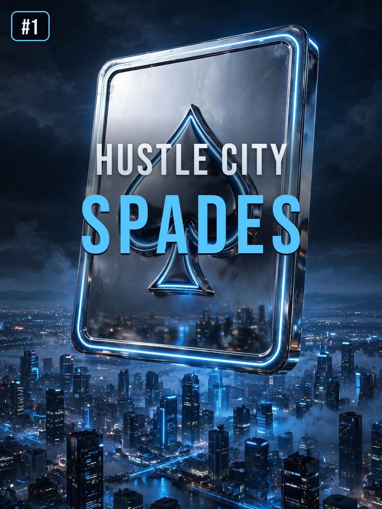
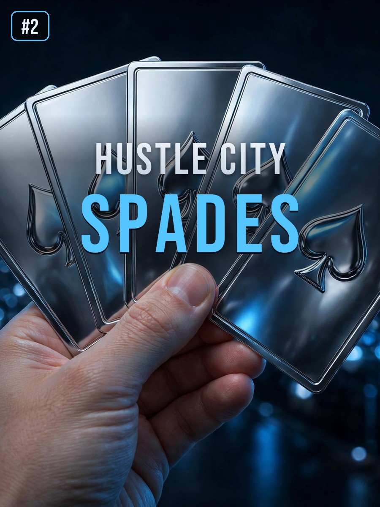
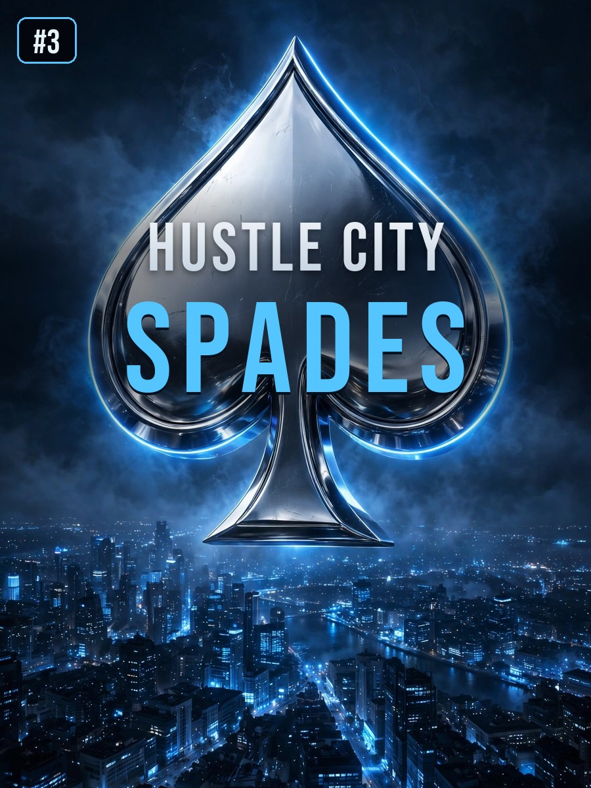
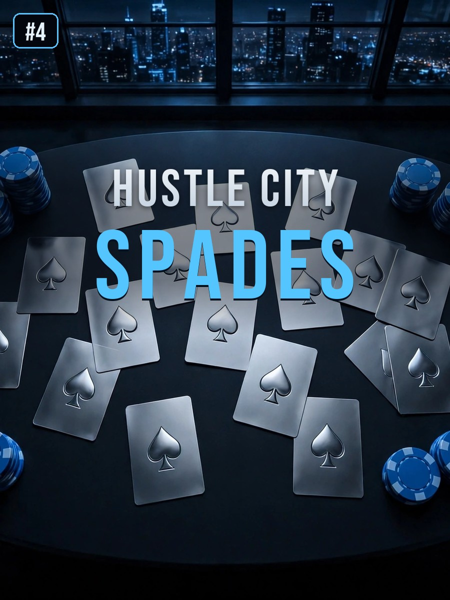
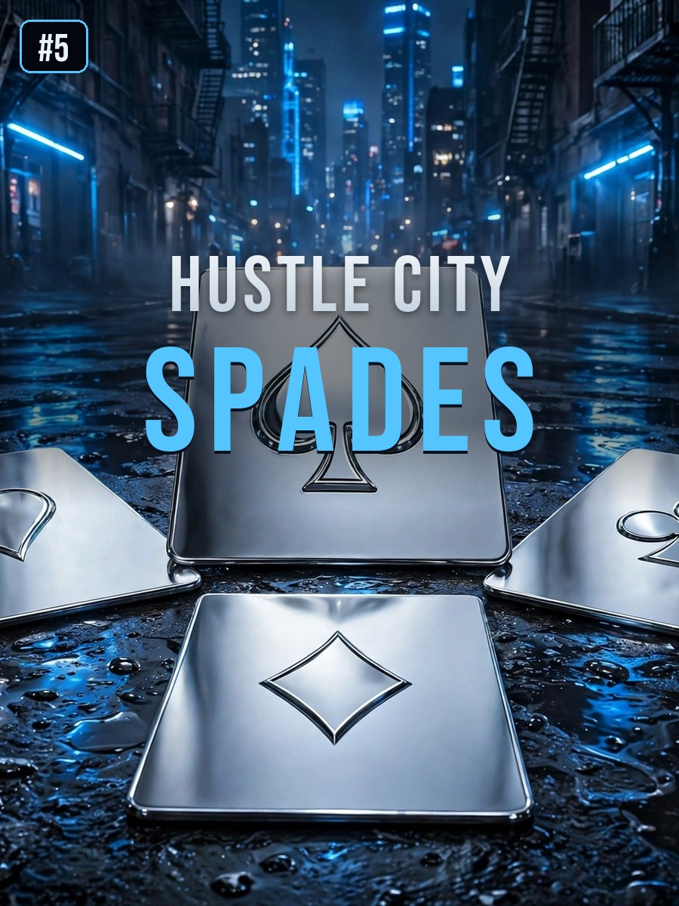
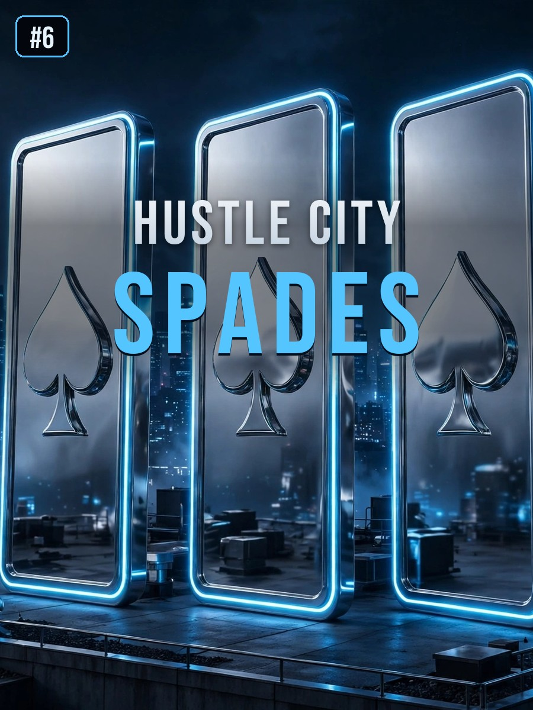
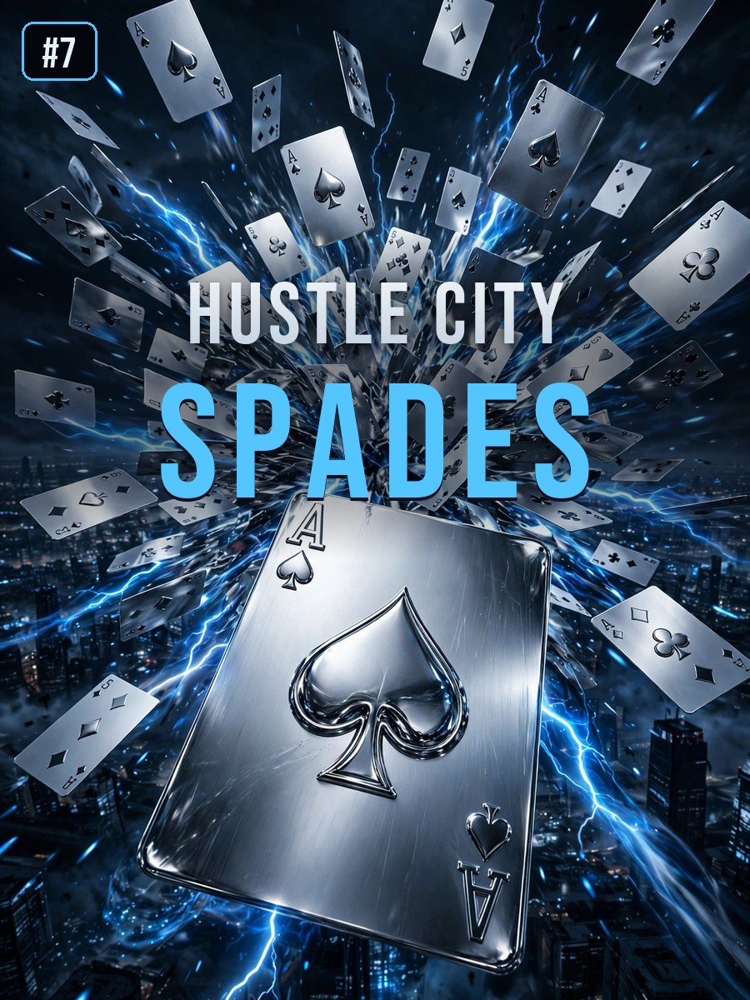
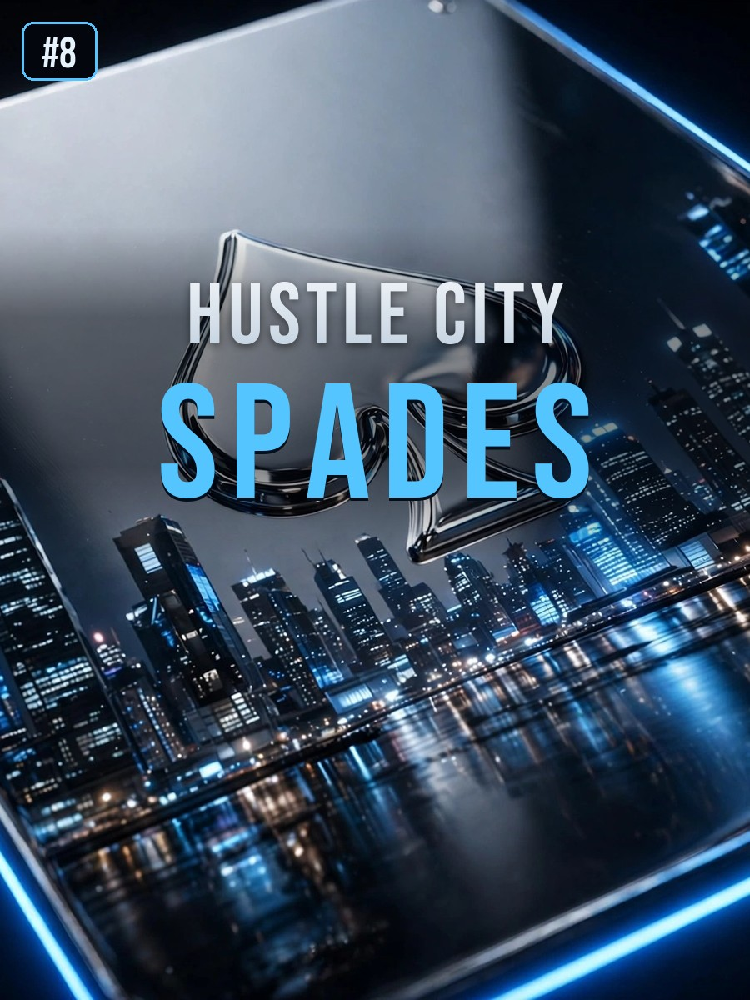
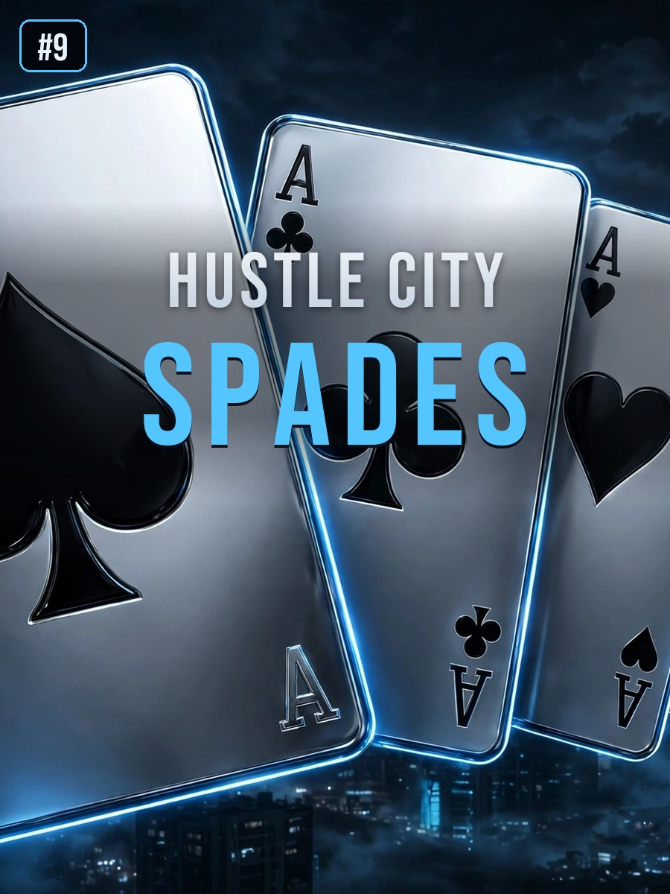
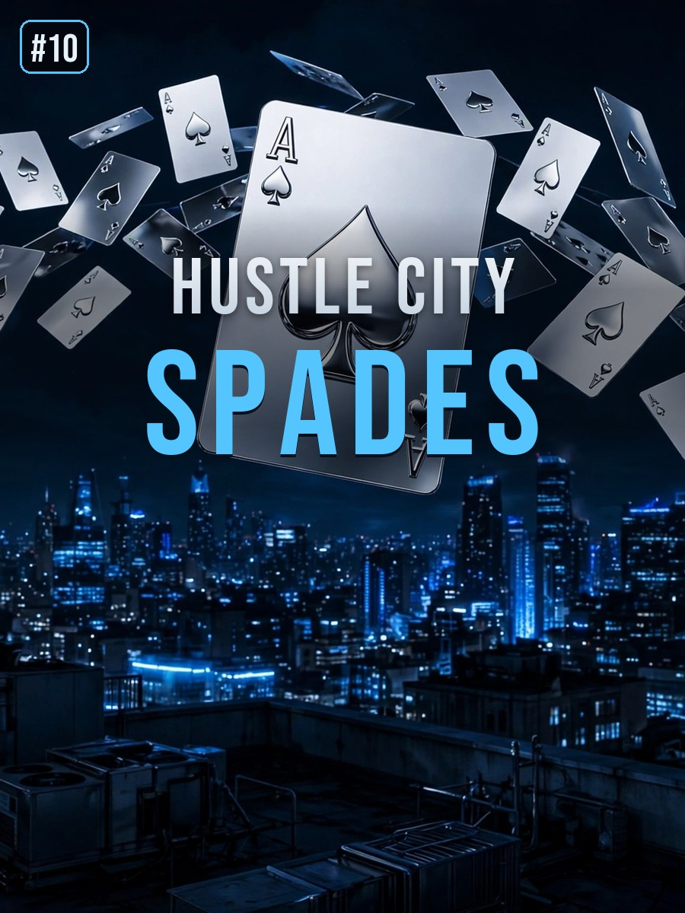

♠ Hustle City Spades — Thumbnail Picks
Ten thumbnail options for Hustle City Spades, built 2026-11-21. Chrome + electric blue, spades front and center, title typeset clean over the art. Every board is portrait with the title and the ace kept in the middle band, so a landscape crop keeps both readable.
Examples only — the game's current thumbnail does NOT change until a pick is made. Pick by number.

#1Skyline Ace
One giant chrome spade card floating over the whole city at night.

#2The Winning Fan
A hand fanning out five chrome spade cards against the city lights.

#3Chrome Emblem
The big chrome spade itself, hovering over downtown like a sign.

#4Table at Midnight
Overhead shot of the table — cards dealt, blue chips stacked, skyline through the window.

#5Neon Alley
Cards dealt on wet asphalt in a neon alley, spade card standing in the middle.

#6Royal Row
Five giant chrome cards standing in a row on a rooftop like monuments.

#7Deck Burst
The ace of spades leading a burst of flying cards and blue lightning.

#8The Big Ace
Extreme close-up of one chrome ace, the skyline reflected in its face.

#9Four Aces
All four aces fanned out — spades biggest and in front.

#10Rooftop Shuffle
Cards frozen mid-shuffle in an arc over the rooftops, ace at the center.
© 2026 Joshua Dawson / J-Dawgs Industries LLC — Hustle City Spades™